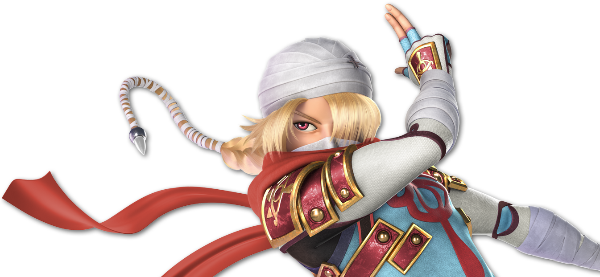

"This isn't happening, this isn't happening, this isn't happening, this isn't happening, this isn't happening..."

Daigo hides in one of the many locker rooms of the ASS Stadium, thankfully one that's empty... If you could even say that
it is... There's still so much weird stuff going on with the layout of this place. It's just not the same.
But that's not the problem right now, is it?
He sits on a bench, hunched over and hands over his head. His breathing's so quick and panicked. He's clawing at his head, trying really
hard not to tear his hair out, or even his own ears.
This whole thing is a fucking nightmare.
This should've been the best tournament ever. A fucking dream.
And she's here.
She's bound to ruin this somehow. She's probably going to kill someone if they rub her the wrong way.
What if it's one of CPUK's fighters? What if it's one of ASS's?
...What if it's Tera?
Just the thought almost sends him into even more of a panic.
Thankfully, that train of thought is cut off as he hears a voice.
"There you are."
And he turns to see Tera approaching him with a gentle look in its eyes.
"I've been looking everywhere for you. I was worried after what happened out in the field."
Daigo should be feeling relieved right now...
But he just doesn't.
He stands up and faces it.
"Tera. What the fuck is she doing here?"
"I'm...not sure what you mean."
"What. The fuck. Is Prism doing here?! WHY is she here?!"
"Well, she is our guest host. She's the one who came up to me with the idea of this tourney and—"
"And you just fucking went with it?! I told you how she's bad fucking news, dude!"
Tera sighs.
"Now, Daigo, I understand that. But she is the host of CPU Kerfuf—"
"No! No, she's not!! Iggy is! Iggy Koopa!! He's the god you should've talked to and brought over!! Prism even said so herself, she literally took over when the Grand Kerfuffle started!"
"I..."
"I can't. I'm sorry."
"And I really appreciate it, man. I just..."
"I'm scared of her. I'm scared of what she'll do."
He starts to move to the door, head lowered, ears floppy, and mood ruined. And he pushes it open.
Before he does, he turns his head to face Tera, yet he doesn't want to look at him.
"Look, I'll just...watch the tourney from HQ. I don't wanna be anywhere near her..."
And he turns back...
"Hey there, Daigo."
"AAAAAAAAAAAAAAAAAAAAAAAAA!!!"
Prism is right in front of him, waving and still smiling.
He tries to run away, only to trip and fall on his ass. But that still doesn't stop him from trying to crawl away.